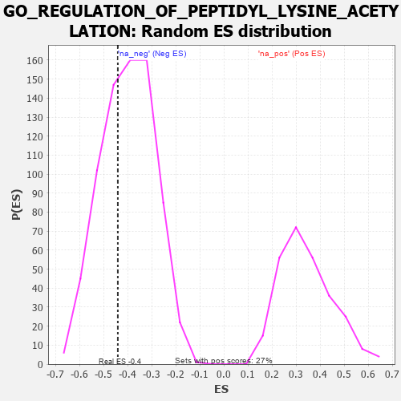

| | | Dataset | 7d |
| Phenotype | NoPhenotypeAvailable |
| Upregulated in class | na_neg |
| GeneSet | GO_REGULATION_OF_PEPTIDYL_LYSINE_ACETYLATION |
| Enrichment Score (ES) | -0.44087824 |
| Normalized Enrichment Score (NES) | -1.1038418 |
| Nominal p-value | 0.3543956 |
| FDR q-value | 0.743776 |
| FWER p-Value | 1.0 |
Table: GSEA Results Summary
 Fig 1: Enrichment plot: GO_REGULATION_OF_PEPTIDYL_LYSINE_ACETYLATION
Fig 1: Enrichment plot: GO_REGULATION_OF_PEPTIDYL_LYSINE_ACETYLATION
Profile of the Running ES Score & Positions of GeneSet Members on the Rank Ordered List
| PROBE | GENE SYMBOL | GENE_TITLE | RANK IN GENE LIST | RANK METRIC SCORE | RUNNING ES | CORE ENRICHMENT | | 1 | SPI1 | | | 162 | 1.182 | 0.0953 | No |
| 2 | NOC2L | | | 647 | 0.578 | 0.0910 | No |
| 3 | KMT2A | | | 1130 | 0.458 | 0.0752 | No |
| 4 | KAT7 | | | 1240 | 0.440 | 0.1046 | No |
| 5 | SMAD4 | | | 1860 | 0.326 | 0.0586 | No |
| 6 | TAF7 | | | 2092 | 0.292 | 0.0581 | No |
| 7 | SIN3A | | | 2361 | 0.251 | 0.0490 | No |
| 8 | BRD7 | | | 3018 | 0.147 | -0.0191 | No |
| 9 | MAPK3 | | | 3589 | 0.062 | -0.0848 | No |
| 10 | ATG5 | | | 4051 | -0.016 | -0.1412 | No |
| 11 | CTBP1 | | | 4323 | -0.064 | -0.1690 | No |
| 12 | SETD5 | | | 4343 | -0.067 | -0.1649 | No |
| 13 | GATA3 | | | 4614 | -0.120 | -0.1870 | No |
| 14 | WBP2 | | | 4780 | -0.153 | -0.1928 | No |
| 15 | FLCN | | | 5140 | -0.235 | -0.2149 | No |
| 16 | HINT2 | | | 5889 | -0.431 | -0.2668 | No |
| 17 | SET | | | 5895 | -0.434 | -0.2250 | No |
| 18 | IWS1 | | | 7613 | -1.587 | -0.2856 | Yes |
| 19 | ARRB1 | | | 7935 | -3.377 | 0.0045 | Yes |
Table: GSEA details [plain text format]

Fig 2: GO_REGULATION_OF_PEPTIDYL_LYSINE_ACETYLATION: Random ES distribution
Gene set null distribution of ES for GO_REGULATION_OF_PEPTIDYL_LYSINE_ACETYLATION